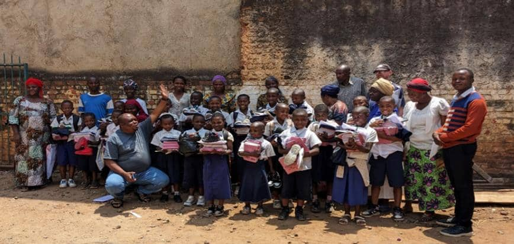

Initiative pour la Promotion des Droits et du Bien-être des Femmes et des Enfants au Kivu
L’Action ZUKI au KIVU est une association créée en 2000 suite aux conséquences néfastes des guerres en répétition en République Démocratique du Congo en général et dans sa partie Est en particulier. Sa devise est « les enfants avant tout » pour tout intérêt de n’importe quelle action, l’enfant est toujours au centre. Le siège administratif de L’Action ZUKI au KIVU est situé sur avenue Emery Patrice Lumumba dans l’enclos du BDD de l’archidiocèse de BUKAVU.